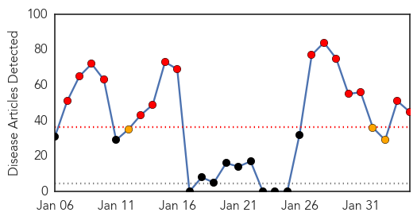
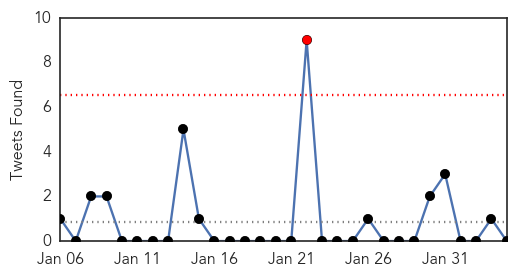

Unknown
30-Day Web Trend
15 alerts, 3 warnings

30-Day Twitter Trend
1 alerts, 0 warnings

Article Locations
Article Confidences
Top Articles:
- 0.983
- Fraser Health declares outbreak of deadly ‘superbug’ at British Columbia hospital
- 0.967
- University of Minnesota develops swine virus surveillance test
- 0.964
- Canadian hospitals failing to report superbug outbreaks
- 0.927
- China battles rising H7N9 human avian flu infections
- 0.917
- Chicago Tribune
- 0.917
- Chicago Tribune
- 0.917
- Chicago Tribune
- 0.917
- Chicago Tribune
- 0.917
- Chicago Tribune
- 0.917
- Chicago Tribune
- 0.917
- Chicago Tribune
- 0.917
- Chicago Tribune
- 0.917
- Chicago Tribune
- 0.917
- Chicago Tribune
- 0.917
- Chicago Tribune
- 0.917
- Chicago Tribune
- 0.917
- Chicago Tribune
- 0.917
- Chicago Tribune
- 0.917
- Chicago Tribune
- 0.917
- Chicago Tribune
- 0.917
- Chicago Tribune
- 0.917
- Chicago Tribune
- 0.910
- The world windows to Thailand
- 0.910
- The world windows to Thailand
- 0.910
- The world windows to Thailand
- 0.874
- Rare disease traced to buffalo fish sold at Niles supermarket
- 0.871
- Pig virus in Simcoe County
- 0.866
- Brazil suffers sporadic power failures amid record heat
- 0.866
- Train, mini-bus, collide in Ukraine, 12 dead
- 0.866
- Russia says Syria government will be at next round of peace talks
- 0.847
- Rare Disease Traced To Fish Sold At Niles Grocery Store « CBS Chicago
- 0.798
- North Darfur ‘mystery disease’ diagnosed as paralysis - Sudan
- 0.788
- Indianapolis Star
- 0.623
- UN appeals for $1.27 billion for ‘shattered’ South Sudan
- 0.617
- Patients Committed to Improving Oral Health in the New Year Can Now VisitDr. Stephen H. Grossman for Laser Gum Disease Treatment in Newton Centre, MA
- 0.615
- Outbreak fears in UAE as horses fall ill with contagious disease
- 0.607
- Starfish ripped apart by mysterious disease
- 0.589
- Ghana, Business Advice, Jobs, News, Business Directory, Real Estate, Finance, Forms, Auto
- 0.557
- 'Many maternal mortality cases not reported'
- 0.554
- HEALTH: Study projects net increase in range and risk for malaria from climate change, though human factors still dominate -- Tuesday, February 4, 2014 -- www.eenews.net
- 0.537
- 800 patients with suspected cancer wrongly discharged
- 0.537
- Eastern Regional Hospital in 2013 Recorded Shocking 1,157 Abortion Cases -
- 0.517
- How Community Health Workers Dramatically Improve Healthcare
- 0.509
- Mattru Jong Hospital calls for help « Awoko Newspaper
- 0.502
- Mystery 'plague' hits over 700 students and staff with violent illness at Texas high school
Top Tweets:
- 0.545
- Minister of Health in Egypt: 24 deaths of seasonal flu since October, but no MERS cases in Egypt so far. http://t.co/m8eX6FjP5i
Influenza
30-Day Web Trend
10 alerts, 3 warnings

30-Day Twitter Trend
1 alerts, 0 warnings

Article Locations

Article Confidences

Top Articles:
- 0.999
- what is H7N9 bird flu?
- 0.998
- New strain of 'deadly' bird flu
- 0.997
- First death from new bird-flu strain fuels fears of pandemic
- 0.997
- AAFP, CDC, Other Groups Reiterate Call to Immunize Pregnant Patients
- 0.996
- Scientists talk of 'pandemic potential' after first confirmed human death from new strain of bird flu
- 0.992
- With Death Toll Rising, Flu Shot Is Still Best Defense
- 0.986
- Chinese scientists sound warning over new bird flu
- 0.978
- More people getting shots, more dying from flu in Northern California
- 0.975
- New China bird flu a reminder of mutant virus risk
- 0.966
- Doctors warn of pandemic potential of the new H10N8 bird flu virus
- 0.962
- Five-Year-Old Boy First Bird Flu Case of 2014
- 0.950
- New bird flu virus claims world’s first human victim
- 0.931
- Made for China? Research Says H7N9 Flu Virus Confined Only to Chinese
- 0.847
- Ten new H7N9 cases push outbreak total past 300
- 0.667
- Thousands of unvaccinated adults die each year from preventable diseases
- 0.632
- New Mexico Department of Health says doctor visits for flu are decreasing
- 0.564
- Spanish flu, the pandemic that killed 50 million, started in China — but may have spread via Canada, historian says
- 0.557
- History’s worst epidemic started in China and spread via Canada, researcher contends
- 0.517
- China human H7N9 avian flu toll reaches 25
Top Tweets:
- 0.545
- RT: The importance of flu vaccinations for ltc staff in preventing an influenza outbreak http://t.co/VrZiHnbv9X